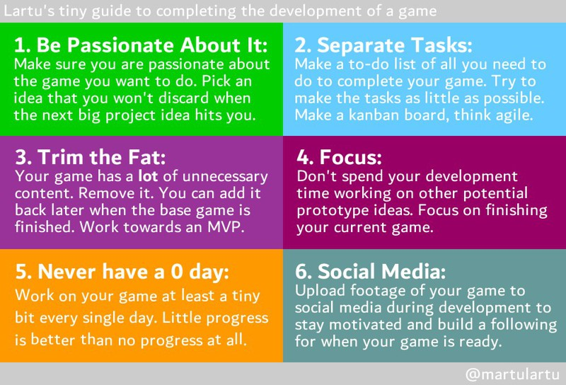

computing : games & art : research
sitemap
|
|
home
computing : games & art : research sitemap |
— T73G80 (JPEG) - view original (149 KiB, JPG)
For some time I had a lot of trouble struggling to finish my own projects, most of them indie games. After tons and tons of abandoned ideas, I ended up creating this list of tips that actually helped me finish stuff, based on my own experience and introspection on why I wasn't being able to complete my developments.
This may sound really dumb, but if you are not passionate about the idea you are trying to develop, you are going to end up discarding it in the future when something shinier comes along. When you have an idea you'd like to work on, give it some thought. Do I really want to do this? Will I still want to work on this tomorrow? Next week? Next month? Have I been thinking about this for some time now?
The idea behind this is not to tell you not to work on things just out of impulse, but to consider that projects you won't care about tomorrow will not probably come to fruition. Of course, there's nothing wrong with experimentation for the sake of it.
This is very, very important! Rome wasn't built in a day, and a long trip starts with the first step. You should make a list of all the things you need to do in order to complete your project. Cortazar's Instructions of How to Climb a Staircase are a great example of how to separate a bigger problem in smaller tasks. Try to keep them as granular as possible. If you can, use Trello or another tool (maybe even post-its) to create a kanban board to keep track of what you have done, what you are doing and what you need to do next.
If you need help setting up a kanban board, I'd recommend keeping it simple with four columns: to-do, doing, done and won't do. We'll come back to this last one later.
Your project normally has a lot of unnecessary content. When we plan a new idea, we usually tend to add a lot of features we'd like it to have, but that aren't a requirement for the finished project. Discard them or leave them for future updates once the project has been released. Work towards the minimum viable product (MVP) you can ship.
Having separated your project in small tasks is amazing for trimming the fat: give all your to-be-done tickets a look and move all the ones that aren't really necessary to the won't do column. The less you have to do, the better. Finishing a small project is already hard enough.
Developing stuff takes a lot of time. If you are already working on something, do not spend time working on other potential prototype ideas! Some people like to start side projects for when they are tired of their main project. This might be okay for them, but what I've mostly seen is that when people do this they end up not finishing any of the projects they have started. Focus! If you need free time, go take a walk, watch a movie, play a game. Whatever you like, but when you are working on some project, let it be the main project you've been meaning to complete.
This means to work a tiny bit on your project every single day. At least. If you are writing a book and you add a single sentence every single day, at the end of the day you'll have one sentence more than you had before. This is good, it's progress. But more often than not, you'll end up getting worked up and adding much more than one single sentence. This is even better, it's more progress.
My grandmother had a saying that went something like "eating and scratching, it's all starting" 1, which could be translated more idiomatically as 'once you pop you can't stop', referring to the fact that once you start scratching yourself or eating it's difficult to stop. In some way, the same also applies here.
This last point is a little more vain, but it's useful nonetheless. If you use social media, you can upload footage of your game during development to build a following that may adquire / use / check your project once it's finished and released. I will also keep you motivated and you'll gather useful feedback. You'll probably feel less inclined to abandon your work if there's a group of people telling you how cool your last update looks.
(1) «A comer y a rascar todo es empezar.»